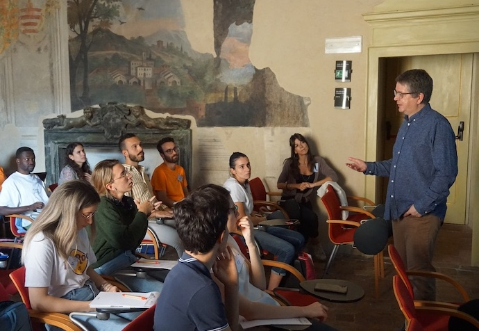

Writing and communicating your science

I have developed a series of lectures on how to write scientific papers and how to communicate your science, whether to other scientists (via web sites, talks and posters) and the general public. I already gave the course to hundreds of students at various places, including the University of Padua, the Astronomical Institute of Charles University, the Instituto de Astrofísica de Canarias (IAC), in Bertinoro, at the INAF-Rome Astronomical Observatory, at the Instituto de Astrofisica de Andalucia, IAA-CSIC, Granada, and at ESO Garching and Chile, as well as, in a reduced form, at the EAS in Valencia and in Padua.These lectures have been very well received by students and are ideal for early PhD students (and last year Master students). The series is ideally done in 5 sessions of 2-2.5 hours, spread over one week, but other formats can be considered - for example, doing something longer with more exercises or with students giving short talks, or condensing the whole series in two days of five-six hours each.
A shorter version is also possible for more advanced PhD students and for post-docs, putting emphasis on either the writing of proposals, job applications, or communicating with the public.
As part of the course, I give feedback on some material written by the students and can also include feedback on their presentations.
100% of all students attending the course said that they recommend this course to other students.
"This is the starting package
that every scientist needs."
"Simply the best course
I've ever attended."
Here are some quotes from organisers who invited me and from students who attended the course:
- "Great course! "
- "There are no other course like this."
- "Many thanks for the course and for being so nice!"
- "Thank you very much for imparting a great workshop!"
- "We received enthusiastic feedback from our students!"
- "Thanks to your advice, I was able to secure a post-doc fellowship!"
- "Dr Henri Boffin is very knowledgable about the subject, very experienced and approachable."
- "This really helped me on lots of topics that are incredibly important and often neglected!"
- "Thank you for the wonderful lessons. I really enjoyed them and they will be very useful in the near future!"
If you are interested in hosting me to give these lectures to your students and/or post-docs, do not hesitate to contact me.
I co-authored a Perspective article in Nature Astronomy, titled "How to prepare competitive proposals and job applications" and offering concrete and experience-based guidance to help scientists improve one of the most crucial skills in academia: writing successful proposals and job applications.
In August 2025, I also organised a Summer School on this topic, with my course being the backbone of the school.